Plugin Version: 1.4.40 | Release Notes | Old Versions
Plugin Version: 1.4.40 | Release Notes | Old Versions
Overview
The Simple Reports plug-in allows ProcessMaker administrators to create Report Tables based on any data involved in a process and grant permission for select users to view and export the report directly from their ProcessMaker inbox.
Requirements
- ProcessMaker v2.5 or higher (stable version + available hotfix)
- Enterprise Plugin v2.0.17 or higher (stable version + available hotfix)
Browser Compatibility
- Mozilla Firefox from 3.6 and later.
- Internet Explorer from 7 and later.
- Chrome
Installation and Configuration
Login to ProcessMaker with a user such as admin. Then, go to ADMIN > Plugins and click on the Import button in the toolbar to import the Enterprise Edition with the "Simple Reporting" plug-in.
After importing the plugin, then enable it by going to ADMIN > Plugins > Enterprise Edition and selecting the plugin from the list. Then click on Enable in the toolbar. The status of the plugin should then change to Enabled.
Setting File Permissions
After installing and enabling the Simple Reporting plug-in, several of the subdirectories need to be made writable, so ProcessMaker running on Apache can write to them.
Linux/UNIX:
cd /processmaker/workflow/engine/plugins/
chmod -R 775 pmReports
Windows:
In Windows Explorer, navigate to the following folder:
- /processmaker/workflow/engine/plugins/pmReports/public_html/generatedReports
Right click on the following folder, and choose the option Properties. In the Properties window, uncheck the option "Read only":
Note: Simple Report Plugin works without assigning the PM Reports role.
Simple Reporting Option
Once the plug-in was enabled, an option on the Cases menu will be added.
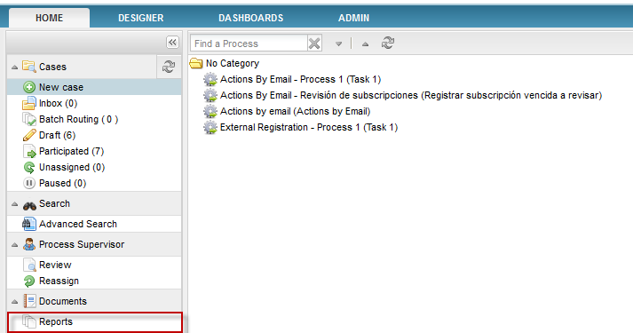
Creating a Simple Report
As it was mentioned before, Simple Report is created from the creation of a Report Table. So, once the Report Table is created, right click on it in the list, and then select the option Convert to Simple Report from the dropdown menu.
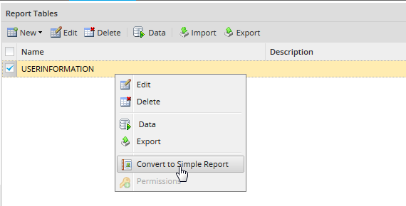
Report table description will change to Simple Report and the table type will keep as Report Table.

Setting up permissions
 Plugin Version: 1.4.24 on
Plugin Version: 1.4.24 on
Reports will be available depending on permission given to a specific Department, User, Group, or all users. By default reports are not available for any user.
Once the report is created, right click on it and choose the Permission option:

A new window will open with the following options:
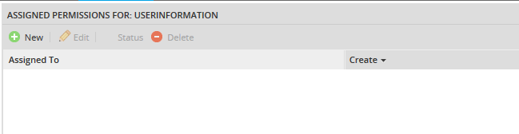
Where:
- New: Creates a new permission.
- Edit: Edit an existing permission.
- Status:. Permission can be set as Activate or Deactivate. Status can be changed if there are more than one permission set.
- Delete: Delete a permission. To delete a permission, more than one permission must be set.
Let's create a permission, click on New to have the following options to set it:
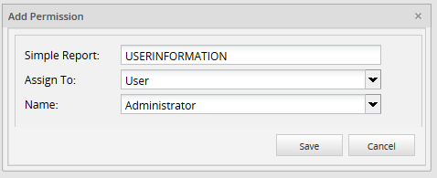
- Simple Report: Name of the Simple Report.
- Assign To: Choose the user, group or department which will be the permission set.
- User: If the permission will set by user, then on Name field all users created in ProcessMaker will list. Note that it will list only users created in the current workspace.
- Department: If the permission will set by department, then on Name field all departments created in ProcessMaker will list. Note that it will list only departments created in the current workspace.
- Group: If the permission will set by group, then on Name field all groups created in ProcessMaker will list. Note that it will list only groups created in the current workspace.
- Everybody: This permission can be set for all users created in the current workspace where the Simple Report plugin is configured.
Once the permission is set click on Save, it will list as follows:
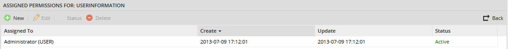
Where:
- Assigned to: It shows which user, department or group has the permission set.
- Create: It shows the creation date of the permission.
- Update: It shows the date of the permission modification.
- Status:: It shows if the permission is Active or Inactive
Use the back arrow to return to the PM table list.
Setting up Filters
Simple Report Plugin gives users the option to set filters on specific fields, use them to target more specific search results. It is possible to filter by more than two fields, if a result needs to be more precise. This filters are only available once the plugin is enabled.
To set filters, go to Report Tables list, either inside DESIGNER of the process where it has been configured or inside ADMIN > Settings; once it is opened, a filter column was added next to auto increment column, double click on it to change its value:
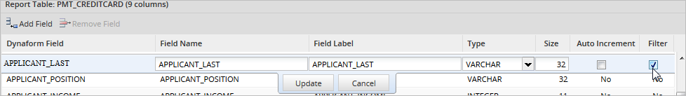
All filters added will work as search criteria once a simple report is being generated.
Note: Filters will be explained in the example below.
How to check the Simple Report generated
To have the simple report generated it is mandatory to run a case filling the values selected on the report table created previously, on the DynaForm. This must be necessary to show these values on the final report.
To start this plug-in, go to HOME and select the Reports option.
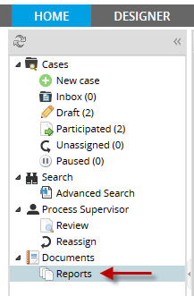
Then, the Simple Reporting plug-in interface will appear, and each tab will represent the enable Report Table for this plug-in.

This interface has the following options:
- Export Page To Excel File: Export the current page to an Excel File.
- Export All to Excel File: If there are more than one page, it will export all pages to an Excel File.
- Filter by: Filters by fields set on the Report Table configuration.
- Filter Reset: Re sets the initial configuration of the list.
- Case create date: Date when case was created. Available from version the 1.4.24.
- Case finish date: Date when case was finished. Available from version the 1.4.24.
Exporting Reports to Excel
Once you have the report generated click on Export Page To Excel File and automatically an Excel document will open with the data of the report generated:
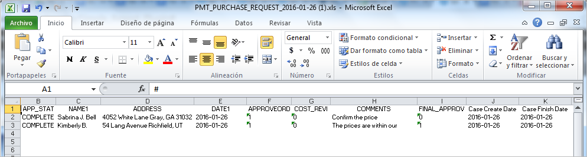
Depending on the users' knowledge in Excel, this report generated can be personalized according to their needs:
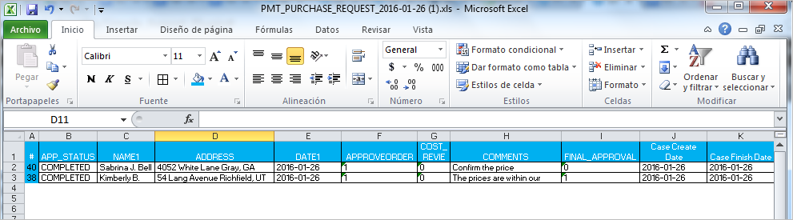
Using filters
As follows you could see an example of how to use filters:
When you configured filters on the Report Table, by clicking on the option Filter by and depending on the fields set as filters, the following search criteria will be open in a new window:

In the case of the example above, Name and Last Name are Report Table fields which will be the search criteria, in the dropdown, the list of logical operators will be displayed:
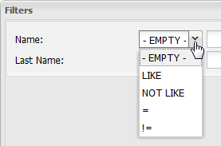
For example, if it is required to search by name on the filter the following criteria could be added:

So in the main list, result will be:
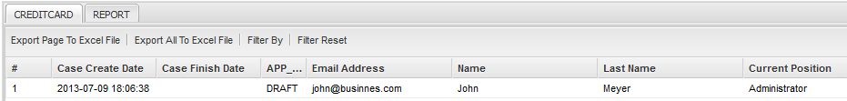
Note: It is possible to filter by more than two fields, if a result needs to be more precise.